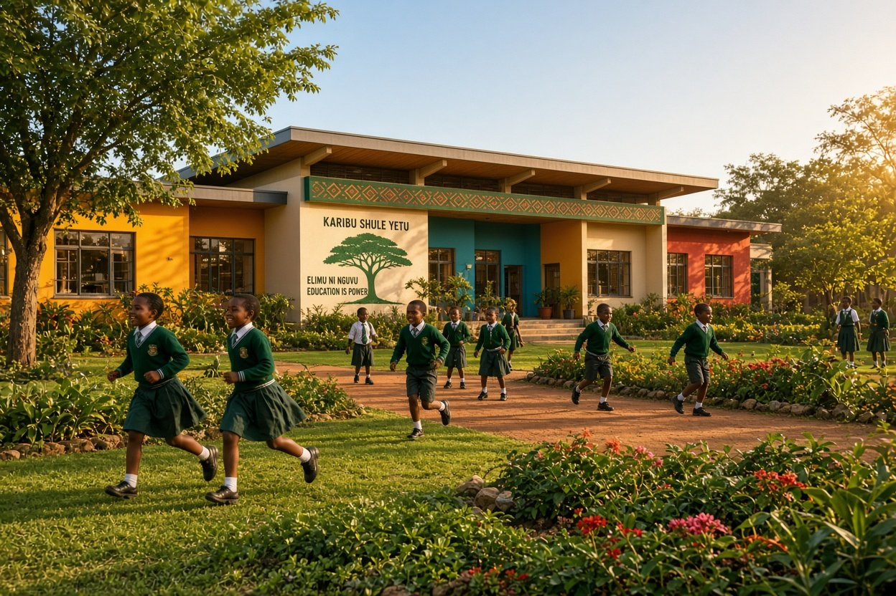
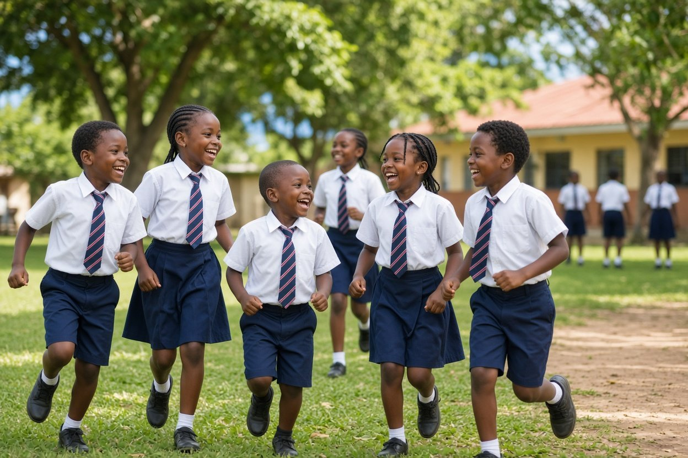
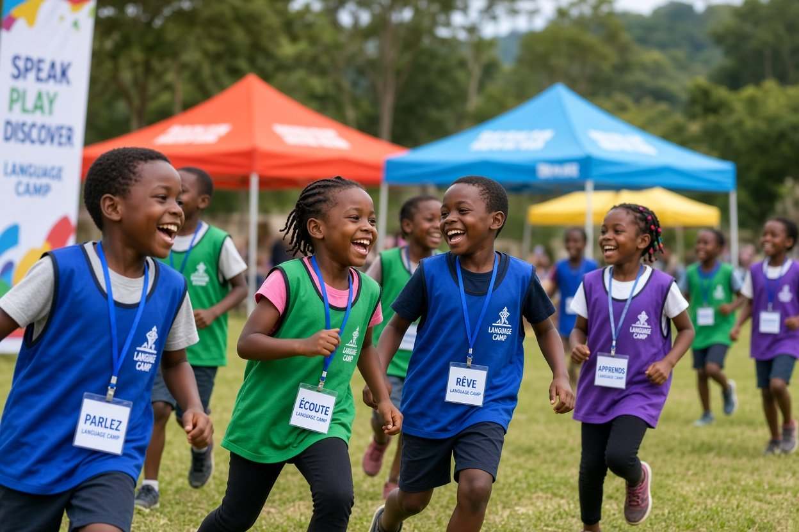

Nurturing Minds,
Shaping Character
Sewa Academy Kenya offers holistic, Christian-aligned education for Play Group through Junior Secondary — building excellence, creativity, and character in every child.
About Sewa Academy
A Christian-aligned school in Slota, Athi River, building excellence in every child.
Sewa Academy Kenya is a private, Christian-aligned educational institution located in Slota, Athi River, Machakos County. We serve learners from Play Group through Junior Secondary, combining rigorous academics with character formation rooted in Christian values.
Programs
From early play to junior secondary, each level is designed with care, structure, and purpose.
Play Group
A warm, nurturing start for early learners with guided play, storytelling, basic numeracy, and social skills.
Kindergarten
Foundational learning blending play and structured activity. Focus on literacy, early mathematics, and character.
Primary School
Strong CBC-aligned academics with emphasis on critical thinking, reading, science, ICT, and moral development.
Junior Secondary
Preparation for senior secondary with deeper subject mastery, leadership, and guided career exploration.
Ready to join our community?
Contact us today to learn more about enrollment, fees, and school visits.
Enroll / Contact Us